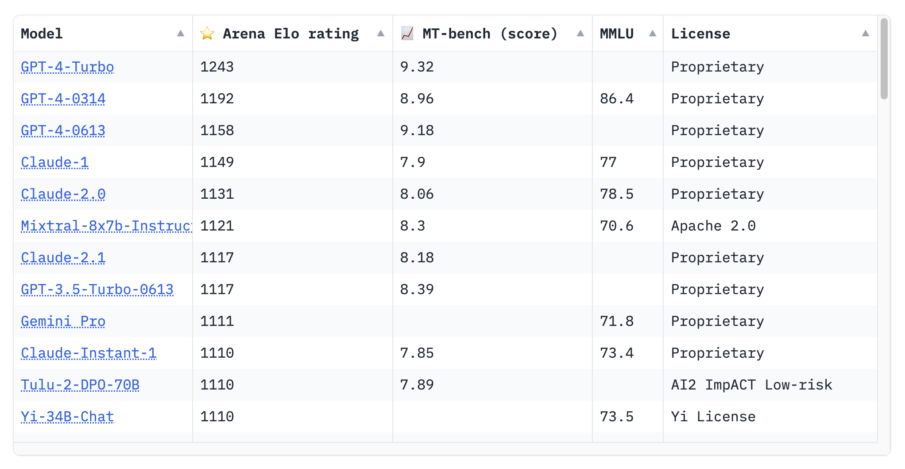
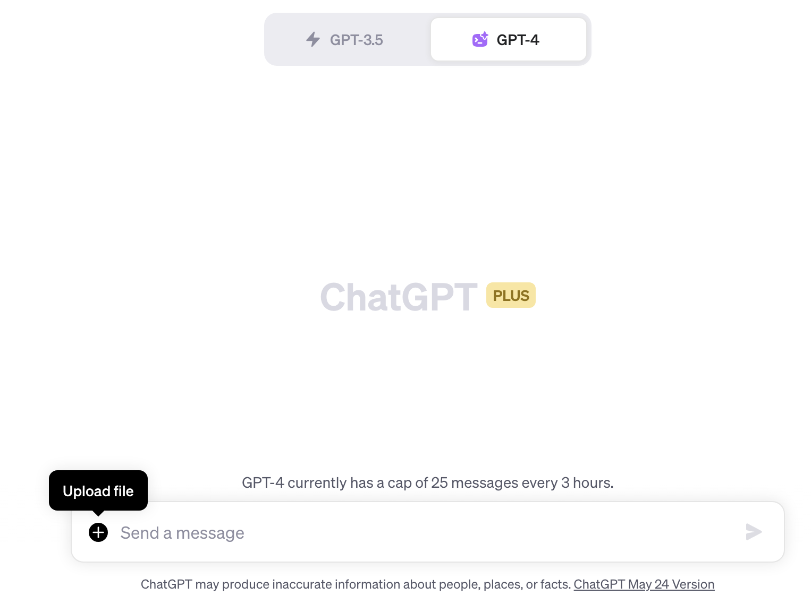
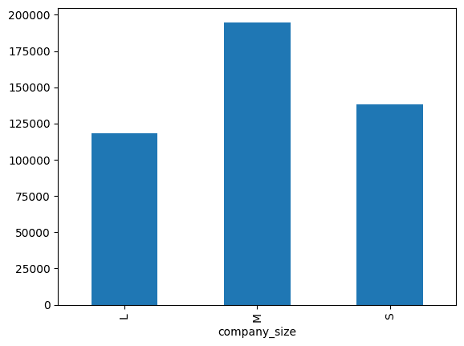

Lawrence Wu
Blog
Projects
TIL
GitHub
Twitter
Categories
All
(51)
ai
(39)
book review
(1)
career
(8)
events
(13)
faith
(2)
personal
(3)
personal finance
(1)
productivity
(2)
running
(3)
summary
(12)
taxes
(1)
Reflections on AI from 2022 to 2026 - Prompt Engineering (LangChain) to Context Engineering (LangGraph) to Harness Engineering (Claude Code)
ai
I wanted to take some time to write some reflections on my experiences using AI since the end of 2022 to today, Feb 2026.
Feb 16, 2026
12 min
Claude Code Daily Tips Series
ai
As a daily Claude Code user for the last 6 months, I’ve learned a lot about Claude Code and agentic coding in general. Trying this thing where I share 1 thing per day. I’m…
Feb 10, 2026
7 min
Field Trips to Amazon and Costco
personal
I’ve had the chance to take my kids on various field trips this year as we’ve been homeschooling them. Two of the more interesting ones were to Costco and Amazon. I love…
Jan 16, 2026
6 min
Year in Review - 2025
personal
This is the first time I’m taking some time to do a year in review and posting it on my blog. Overall I’ve enjoyed the exercise of writing and sharing ideas about things…
Dec 31, 2025
16 min
Bunching Charitable Contributions in 2025
personal finance
taxes
I recently took advantage of a strategy called “bunching” where you combine multiple years of charitable contributions into one year. I’ll use a made up example here but you…
Dec 19, 2025
8 min
Little Theology of Exercise
book review
Starting a new type of post where I’ll review books. I recently read A Little Theology of Exercise: Enjoying Christ in Body and Soul by David Mathis. The beginning part of…
Nov 24, 2025
7 min
First Marathon Reflections
running
I did it. I ran a marathon. Long Beach 2025 Marathon is finished. What an amazing race day and training block. I’ve heard that a race is a celebration of the training you…
Oct 30, 2025
11 min
How to Learn AI
ai
I was recently asked how you can learn AI. This is a pretty difficult question to answer because 1) AI’s development is so rapid and 2) everyone is coming from a different…
Sep 9, 2025
8 min
Why Companies Should Open Source and Host Their Own MCP Servers
ai
Model Context Protocol (MCP)
has quickly become a standard interface for how agents and LLM-powered clients interact with tools and APIs. What’s exciting is that some…
Aug 21, 2025
5 min
Summaries of Talks from Code with Claude Conference 2025
ai
events
summary
Claude had a conference recently all about Claude Code. I transcribed all of the talks using transcripts and hosted it here. The YouTube playlist is here. Below are…
Aug 15, 2025
18 min
Summary of Armin’s Talk - Agentic Coding Ecosystem 2025: Navigating the Tool Explosion
ai
events
summary
I’ve learned a lot about Claude Code and agentic coding tools from Armin Ronacher. He’s the creator of Flask and Jinja and he’s very interested in Agentic coding tools. This…
Aug 14, 2025
3 min
Claude Code Camp - hosted by Every
ai
events
Every hosted a Claude Code Camp today for an hour. Different members from their team shared in detail how they use Claude Code. I’ve only started using Claude Code in my…
Jul 18, 2025
6 min
Starting to Use Claude Code
ai
I had tried Claude Code briefly when it first came out 4 months ago. However I wasn’t that impressed. Lately though, I’ve seen more and more people turn to Claude Code. The…
Jul 18, 2025
4 min
LangChain Interrupt Conference 2025 - 1 Hour Recap
ai
events
I tried my best to condense the ~16 hours of content from the LangChain Interrupt Conference to less than an hour.
May 30, 2025
1 min
Levels of AI Use
ai
As I’ve talked to different people at work and amongst friends, there is a growing gap between those that use AI (mostly ChatGPT) and those that do not. It got me thinking…
May 27, 2025
6 min
LangChain Interrupt Conference 2025 AI Recap
ai
events
This page contains AI-generated summaries of the LangChain Interrupt 2025 conference talks.
May 23, 2025
41 min
Andrew Ng & Harrison Chase Fireside Chat
ai
events
The questions and answers extracted from the fireside chat between Harrison Chase (LangChain) and Andrew Ng (AI Fund) at LangChain Interrupt 2025.
May 14, 2025
27 min
LangChain Interrupt Conference - Day 1
ai
events
I had the privilege of attending LangChain’s first conference. The first day was a hands-on workshop going through the creation of an agent (an email assistant) from…
May 14, 2025
24 min
Summary of Karpathy’s Deep Dive into LLMs like ChatGPT
ai
summary
I’ve been experimeting with writing CLI utilities to fetch and summarize YouTube videos. This is primarily for personal use.
May open source the CLI in the future
. The CLI…
Feb 24, 2025
12 min
Second Half-Marathon in the Books
running
Second half-marathon complete (Strava)! Goals for this race at Surf City 2025 was just to 1) not get injured and 2) beat my first HM time of 1:49. Felt like the conditions…
Feb 2, 2025
2 min
Running Lessons
running
faith
I never considered myself a runner. I actually never enjoyed the activity of running. I usually didn’t look forward to it. I would occassionally still do it because I knew…
Oct 13, 2024
19 min
Introduction to LangGraph Tutorial
ai
summary
The LangChain team recently released the first course in their LangChain Academy called Introduction to LangGraph (repo). As I’m working through it I will make some notes on…
Sep 20, 2024
7 min
God’s Design for Marriage
faith
summary
My church is hosting a retreat this weekend and we are privileged to have John Street as our speaker. He was planning to speak on God’s Design for Marriage. I was curious…
Aug 14, 2024
10 min
How Dwarkesh Patel Uses AI & Claude
ai
summary
Dwarkesh Patel is becoming the new Lex Fridman of podcasting. Lex got his start a podcaster interviewing AI experts. Since then Lex has branched out and most of his guests…
Jul 26, 2024
18 min
What to do after getting laid off?
career
My company, UKG, announced layoffs last Wednesday (see an industry expert’s take on reasons why). 14% of the company was let go which is around 2,200 out of the 15,000…
Jul 9, 2024
3 min
Finetuning LLMs with Axolotl
ai
I started Hamel Husain’s
fine-tuning LLM course
Mastering LLM course last week. I don’t have a ton of experience fine-tuning LLMs so I thought this would be a good way to…
May 23, 2024
25 min
Dario Amodei & Elad Gil
ai
events
summary
At Google Cloud Next 2024, Elad Gil interviewed Dario Amodei, the CEO of Anthropic. I recorded the talk (really bad audio) and transcribed it using a whisper (small-en)…
Apr 10, 2024
12 min
AI Impact on Jobs
ai
career
Andrew Ng gave a talk recently on AI’s Potential Effect on the Labor Force. Here’s the transcript of the video.
Mar 8, 2024
2 min
Ode to Costco
personal
I’ve been a fan of Costco for many years. Charlie Munger famously loved Costco too. I still remember growing up and going to Price Club with my mom or dad and seeing them…
Feb 28, 2024
10 min
ColBERT and Information Retrieval
ai
summary
I recently learned about ColBERT, a BERT-based model for efficient passage retrieval. The authors of the paper ColBERT: Efficient and Effective Passage Search via…
Jan 18, 2024
8 min
LLM Summarization and NeurIPS Papers
ai
events
summary
I didn’t get the chance to attend NeurIPS last week. The sheer number of papers submitted is staggering: 13,300 submitted papers that were reviewed by 1,000+ people. 3,540…
Jan 4, 2024
63 min

Google Gemini and Function Calling
ai
Google’s latest LLM called Gemini was released in December. Google trained three model sizes: Nano, Gemini and Ultra (small, medium and large respectively). Ultra hasn’t…
Dec 26, 2023
18 min
Whisper Transcripts
ai
Whisper is a speech recognition model by OpenAI that is open source. It is a multi-task, multilingual model that can perform speech recognition, speech translation and…
Nov 15, 2023
2 min
AI Engineer Summit 2023
ai
events
sywx was the first to define the job title “AI Engineer” as a role in between a Data Scientist and Full Stack Software Engineer, someone that builds on top of large…
Oct 10, 2023
41 min
How LLMs will affect Jobs?
ai
career
I have been interested in how language models will affect the future of work. Having worked with LLMs the last ~6 months, I’ve seen their impact on my work as a data…
Aug 29, 2023
10 min
KDD 2023 - Recap
ai
events
I attended KDD 2023 which was held in Long Beach, CA from Aug 6-10, 2023.
Aug 25, 2023
1 min
Double Machine Learning
ai
summary
At KDD2023 I was introduced to the term “Double Machine Learning” (DML). I was surprised I had never heard the term before so here are some notes on this important method in…
Aug 8, 2023
16 min
KDD 2023 - Workshops: LLM and Causal Inference
ai
events
I attended KDD 2023 which was held in Long Beach, CA from Aug 6-10. The first day I attended was Monday which had half-day workshops around a topic. The two I attended were…
Aug 7, 2023
26 min
Paper Summary: Llama2
ai
summary
Llama2 was released by Meta on 2023-07-18. My first exposure to the model was running it locally on my Mac and being blown away by the quality of the results. With most of…
Jul 23, 2023
15 min
Running Llama2 Locally on a M1 Mac
ai
Llama2 was released by Meta 2 days ago. See the:
Jul 20, 2023
11 min

Code Interpreter & Data Analysis
ai
In this post I’ll go over some observations I’ve had while using OpenAI’s Code Interpreter for the first time. It is not available as an API, rather only through the ChatGPT…
Jul 13, 2023
25 min

LLM Agents with Langchain
ai
I’m currently working my way through the Databricks LLM101x Course on EdX. It’s actually pretty good. During the third section, there was this interesting example where they…
Jul 12, 2023
10 min
Layoffs Attributed to AI
ai
career
This WSJ article highlighted AI’s impact on marketing related roles. In one the paragraphs, a statistic was cited that I had never seen before, the number of layoffs that…
Jun 24, 2023
1 min
Being Able to Focus is a Superpower
career
productivity
Walter Isaacson is set to release a biography of Elon Musk later this year. He was recently on a Twitter Space with a few other people talking about Musk. One of the things…
Jun 24, 2023
3 min
LLM in Production Conference Takeaways
ai
events
I didn’t get to attend the LLM in Production Conference but found these takeaways Demetrios Brinkmann shared in an email to be quite insightful:
Jun 21, 2023
1 min
State of GPT - Andrej Karpathy
ai
summary
Andrej Karpathy gave a talk at a Microsoft conference in late May about the State of GPT:
Jun 13, 2023
5 min
All-In Hosts Opinion on Jobs
ai
career
During Episode 132 of the All-In Podcast, (transcript here) the hosts took a live question from the audience:
Jun 10, 2023
6 min
Staying Human in the Age of LLMs
ai
career
The WSJ’s Ben Cohen wrote an article highlighting Professor Po-Shen Loh, a math professor from Carnegie Mellon University and coach for Team USA’s International Mathematical…
May 28, 2023
3 min
Large Language Models, Work and the Future of Jobs
ai
career
Last month, Allen Downey showcased the power of ChatGPT by using it to solve every problem in his Think Python books. As a result, he encouraged everyone who writes code to…
May 5, 2023
6 min
GPT Related Papers, Code, and News
ai
There’s seemingly a firehose of development in the last month or so. I’ve been trying to keep up with the latest developments in GPT and related models. Here’s a list of…
Apr 4, 2023
4 min
Useful Applications (mostly for Mac)
productivity
In this blog post, I’ll introduce you to a list of useful applications, covering both developer tools and productivity applications that I’ve found useful over the years.…
Mar 24, 2023
4 min
No matching items